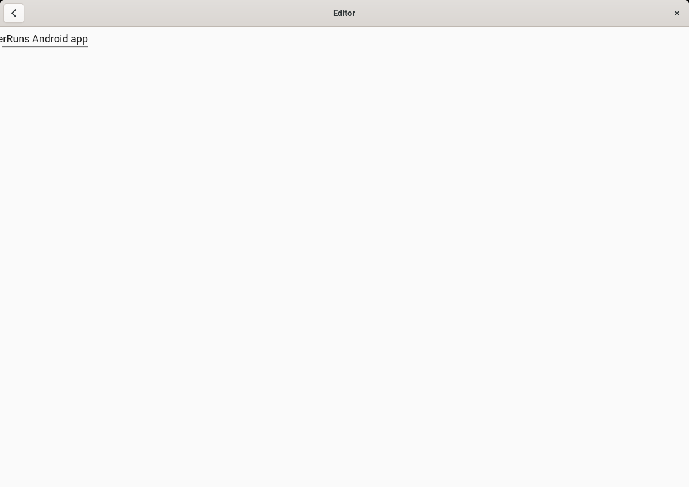

APK Starter
Run Android apps on the Linux desktop. APK Starter wraps Android Translation Layer in a Flatpak, reads name and icon from the APK and can put the app into your application menu.

Screenshot: Editor by billthefarmer (GPL-3.0).
Install
flatpak install --user https://jimbambuli.github.io/apk-starter/io.github.Jimbambuli.ApkStarter.flatpakref
Or add the repository first:
apk-starter.flatpakrepo,
then flatpak install apk-starter io.github.Jimbambuli.ApkStarter.
The repository is signed; the public key is apk-starter.gpg.
Use
flatpak run --file-forwarding io.github.Jimbambuli.ApkStarter @@ app.apk @@
Details, options and the shell alias are in the README.
Source: github.com/Jimbambuli/apk-starter, GPL-3.0-or-later.